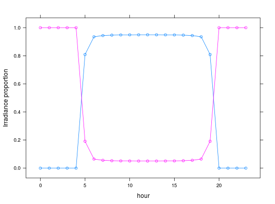

Simulates the light macro environment
Usage
lightME(lat = 40, DOY = 190, t.d = 12, t.sn = 12, atm.P = 1e+05, alpha = 0.85)
Arguments
- lat
- the latitude, default is 40 (Urbana, IL, U.S.).
- DOY
- the day of the year (1--365), default 190.
- t.d
- time of the day in hours (0--23), default 12.
- t.sn
- time of solar noon, default 12.
- atm.P
- atmospheric pressure, default 1e5 (kPa).
- alpha
- atmospheric transmittance, default 0.85.
Value
-
a
list structure with components
Description
Simulates light macro environment based on latitude, day of the year. Other coefficients can be adjusted.
Examples
## Direct and diffuse radiation for DOY 190 and hours 0 to 23 res <- lightME(t.d=0:23) xyplot(I.dir + I.diff ~ 0:23 , data = res, type='o',xlab='hour',ylab='Irradiance')
xyplot(propIdir + propIdiff ~ 0:23 , data = res, type='o',xlab='hour',ylab='Irradiance proportion')